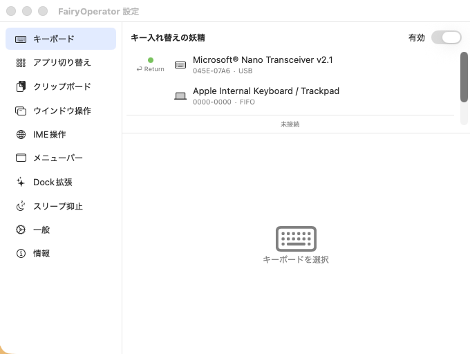

外付けキーボードごとに任意のキーを再マッピング。HID デバイス単位で制御。
Cmd+Tab を拡張。Unity プロジェクトのアイコンも自動で見つけて表示。
履歴を保持し、すばやく検索・呼び出し。
ホットキーで分割・最大化・移動。
日本語入力のオン/オフを意のままに。
ステータスバーから機能を即時切替。
応答なしのアプリに砂時計、ウインドウ数バッジなど Dock アイコンを賢く。
必要なときだけ自動でスリープを止める。

FairyOperator.app.zip をダウンロード。/Applications に配置。Developer ID 署名 + Notarization 済み。Gatekeeper 警告は出ない想定。